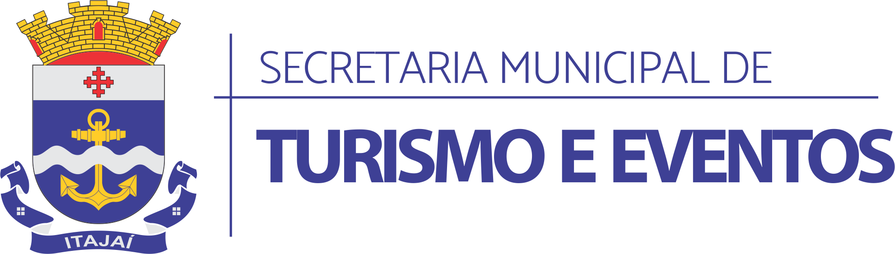
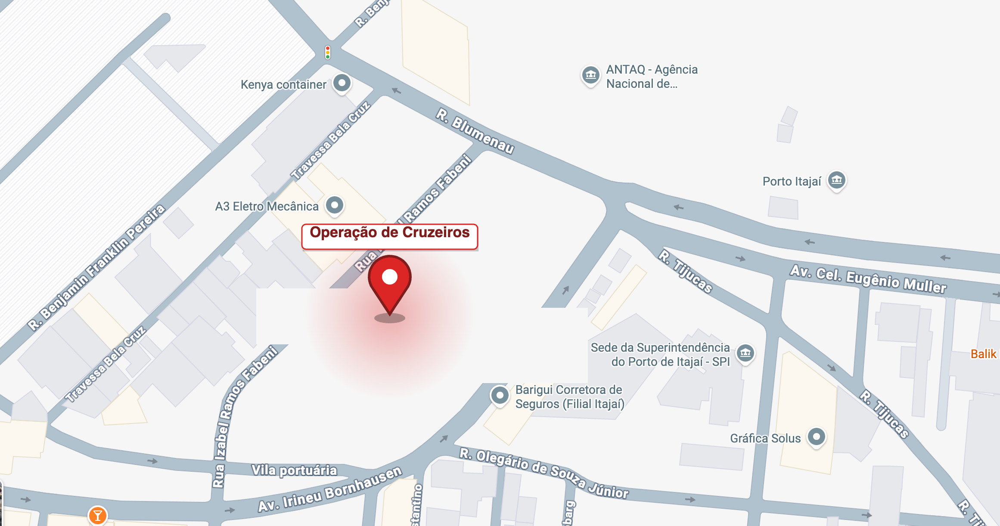
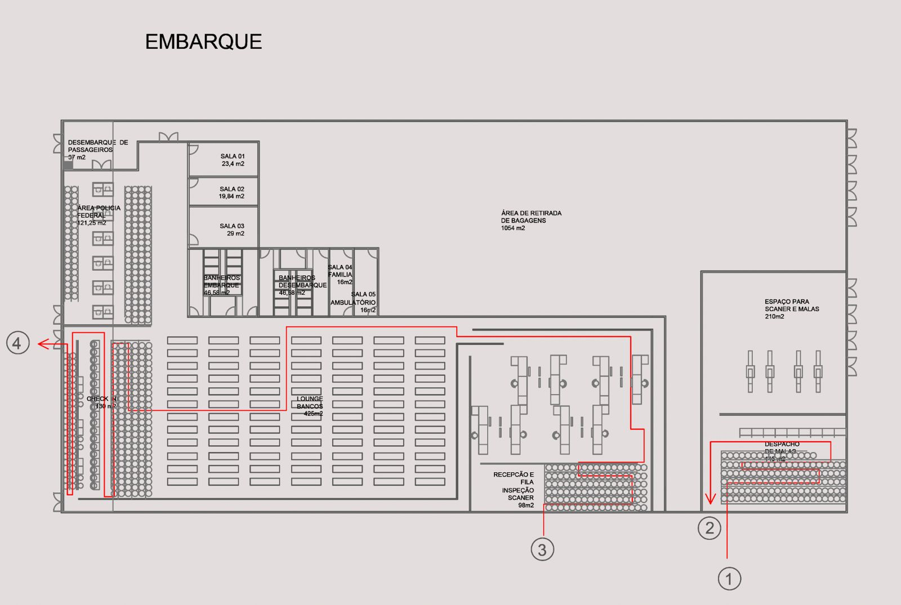
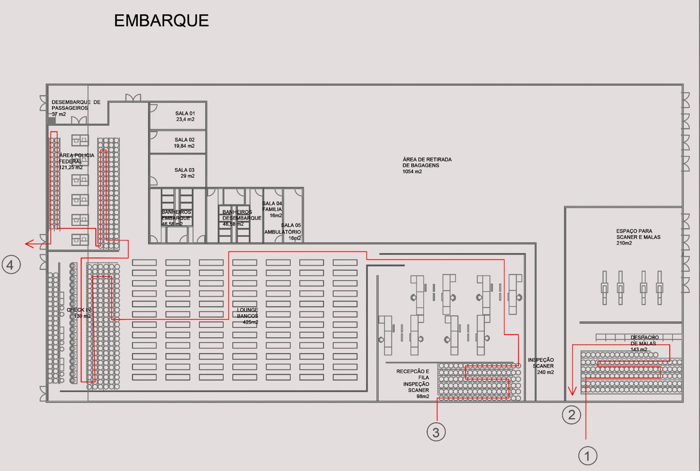
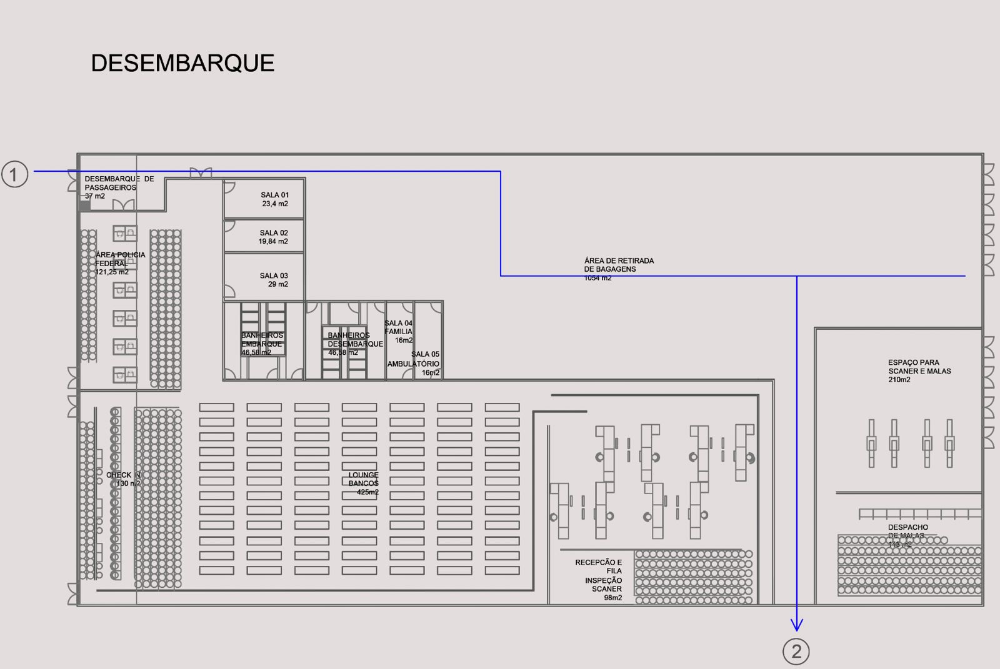
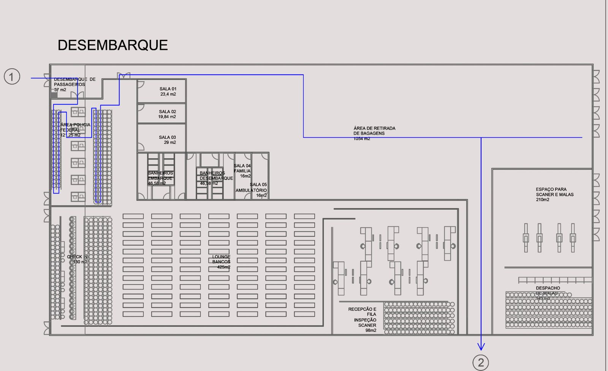
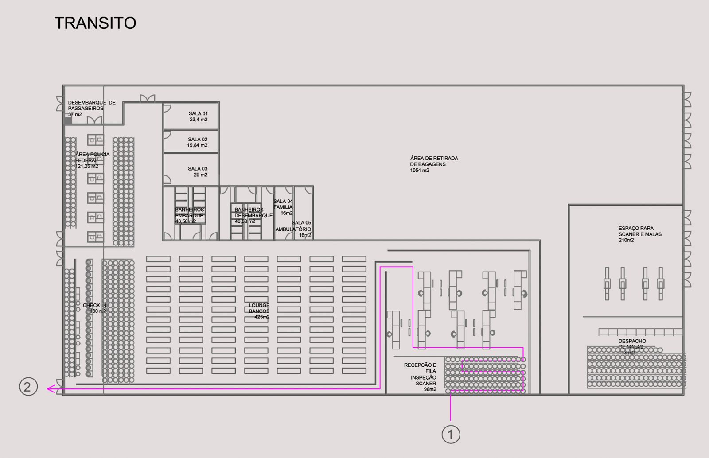
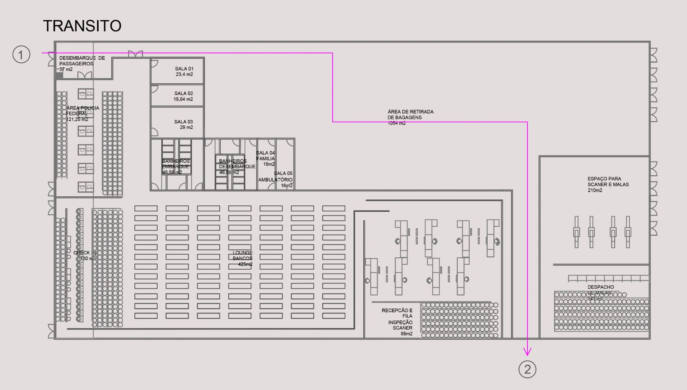
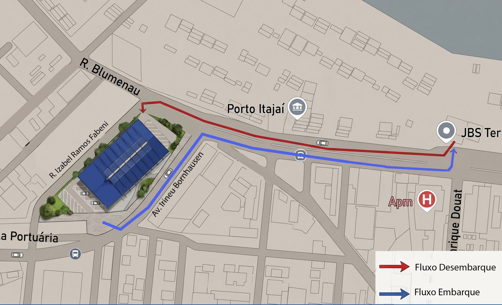

Baseline auditado da temporada encerrada em 18 de abril de 2026. Os indicadores sustentam a conversa com o armador sobre o próximo ciclo operacional e deixam claro o porte de Itajaí como destino-base de cruzeiros no calendário sul-americano.
| Armador | Escalas | % | Participação |
|---|---|---|---|
| Costa Cruzeiros | 27 | 73,0% | |
| MSC Cruzeiros | 7 | 18,9% | |
| Norwegian Cruise Line | 2 | 5,4% | |
| Plantours & Partner | 1 | 2,7% |
32 das 37 escalas realizaram embarque e desembarque completos na cidade, com média de ~960 passageiros embarcando e ~970 desembarcando por escala. Pernoite pré e pós-cruzeiro, maior gasto local e demanda consolidada por infraestrutura terrestre — hotelaria, mobilidade e trade.
Cinco navios de quatro armadores compuseram a temporada 2025/2026 — dois em operação completa regular, dois em trânsito e um em expedição técnica. Uma carteira que consolida Itajaí como destino recorrente no calendário sul-americano.
A combinação dos armadores já estabelecidos com a nova estrutura operacional de 2026/2027 reforça o compromisso da cidade em oferecer infraestrutura à altura da operação de cada parceiro — com fluidez de fluxos, controle institucional integrado e acolhimento pleno ao passageiro.

Abrir no Google Maps ↗Área construída de 3.200 m² em configuração 80 × 40 m (área operacional útil de 2.895 m²), organizada por zonas segmentadas para embarque, desembarque, controle, bagagem, inspeção e acolhimento. Cada zona sustenta um ponto específico da jornada do passageiro.







O layout do terminal foi concebido para incorporar, sem retrabalho, o Plano de Segurança em desenvolvimento pelo Porto de Itajaí. Os dispositivos previstos integram-se às zonas funcionais já dimensionadas — o fluxo do passageiro permanece o mesmo, agora com camada de segurança institucionalmente coordenada.
O terreno, as zonas funcionais e as rotas do passageiro já contemplam todos os pontos físicos onde os dispositivos serão instalados. SETUR e Porto de Itajaí caminham em coordenação contínua: o que se aprova aqui é o dimensionamento operacional; a camada de segurança institucional segue em paralelo, sem reabrir o que já foi dimensionado.
O terminal é a porta — a cidade é o produto. Itajaí oferece ao armador uma infraestrutura consolidada: hotelaria de bandeira internacional, gastronomia premiada, conectividade aeroportuária a 4 km e ativos turísticos distribuídos em raio curto, o que sustenta tanto operação completa quanto shore leave de alto padrão.
A combinação de terminal dimensionado, cidade-destino compacta e aeroporto internacional próximo coloca Itajaí no patamar de destino-base sul-americano relevante — formato preferido por armadores para ciclos de 7 a 14 noites com pernoite pré e pós-cruzeiro.
Trilha de entrega do projeto até a abertura da temporada — do encerramento do desenvolvimento técnico neste mês até a operação plena do terminal em novembro. Oito marcos sequenciais, cada um com responsável institucional, prazo definido e entrega verificável.
O cronograma reflete o compromisso da Secretaria com os armadores e agentes marítimos — cada fase tem responsável institucional, prazo definido e entrega verificável, de forma a assegurar a abertura da temporada 2026/2027 dentro da janela operacional acordada.
Este documento foi preparado para subsidiar a conversa com armadores, agentes marítimos e autoridades parceiras sobre a próxima temporada. Convidamos os interlocutores a agendarem uma visita técnica ao terminal e uma reunião institucional com a Secretaria.
Terminal dimensionado, fluxos definidos, cidade-destino consolidada, logística de transfer desenhada e cronograma institucional em curso — Itajaí está pronta para receber a carteira de armadores da temporada 2026/2027.